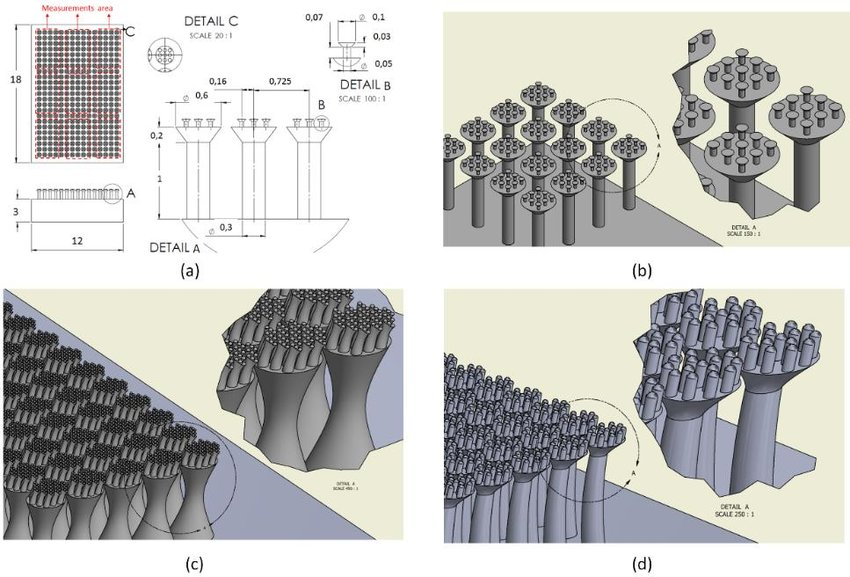
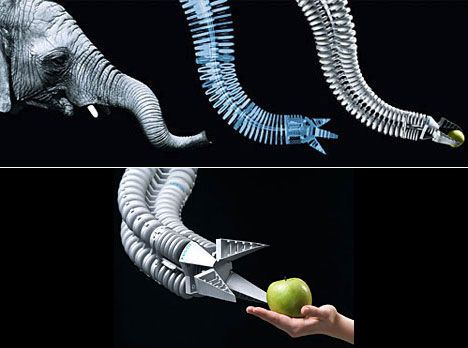

Let's delve into the intriguing world of bio-inspired design, a multidisciplinary approach that draws inspiration from nature to solve complex human challenges. Bio-inspired design, also known as biomimicry, involves studying natural systems, processes, and structures and applying their principles to design innovative solutions that mimic nature's efficiency, resilience, and sustainability. From architecture and engineering to product design and materials science, bio-inspired design offers a fresh perspective on problem-solving, harnessing billions of years of evolution as a source of inspiration and guidance.
One of the most compelling aspects of bio-inspired design is its potential to revolutionize sustainability and environmental conservation. By emulating nature's elegant solutions to complex problems, designers can create products and technologies that minimize waste, reduce energy consumption, and promote ecological harmony. For example, biomimetic materials inspired by the self-cleaning properties of lotus leaves or the structural strength of spider silk can lead to more durable and environmentally friendly building materials. Likewise, studying the aerodynamics of birds or the hydrodynamics of fish can inspire the design of more energy-efficient vehicles and transportation systems.
Moreover, bio-inspired design fosters interdisciplinary collaboration and cross-pollination of ideas across diverse fields of study. By bringing together biologists, engineers, architects, and designers, bio-inspired design encourages a holistic approach to innovation that transcends traditional disciplinary boundaries. Collaborative projects often result in groundbreaking discoveries and novel solutions that address complex challenges from multiple perspectives. Whether developing new medical devices inspired by the human body's biomechanics or designing energy-efficient buildings modeled after termite mounds, interdisciplinary teams leverage the collective wisdom of nature to push the boundaries of creativity and ingenuity.

Furthermore, bio-inspired design holds promise for enhancing human well-being and quality of life. By studying the intricate systems and processes found in nature, designers can create products and environments that promote health, comfort, and happiness. Biomimetic innovations in healthcare, for instance, may lead to more effective drug delivery systems, prosthetic limbs, or medical implants that better integrate with the body's natural functions. Likewise, bio-inspired architecture and urban planning can create cities that mimic the resilience and adaptability of ecosystems, fostering human flourishing while minimizing environmental impact. Overall, bio-inspired design offers a holistic and sustainable approach to innovation that not only addresses pressing human needs but also fosters harmony with the natural world.